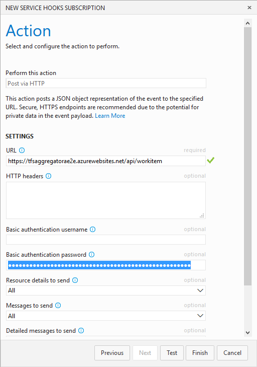

Installing the Web Service
Installing TFS Aggregator Web Service is a six step process:
- Grant access to VSTS/TFS
- Deploy TfsAggregator web application
- Configure TFS Aggregator
- Define the policy
- Setup logging (optional)
- Setup the Web Hooks in TFS/VSTS
Grant access to VSTS/TFS
There are three possible options to grant access. In most cases you will have to change the configuration later using the values collected in this step.
1. Using a Personal Access Token
a. Create a Personal Access Token
Leave All scopes select; TFS Aggregator use the old Object Model (see Authentication issue using Personal Access Token when all options of “Selected Scope” are selected).
b. Capture Personal Access Token’s value and store it for later
NOTE: this is per-account value you can use (User Profile/Security)
2. [TFS only] Account permissions
instead of a PAT, you can give permission to the account running the Application Pool (see Troubleshooting)
3. [TFS only] Explicit credentials
or put username and password in clear text in the /AggregatorConfiguration/runtime/authentication node of the policy file
If you do not allow access expect a similar error
Deploy TfsAggregator web application
1. [TFS only] Install on IIS
To install TfsAggregator web application you can use the Deploy-TfsAggregatorWebHooks.ps1 as a sample script
- use SSL to avoid exposing credentials
- the account running Aggregator application pool must have proper permissions on the target TFS or you set some credentials in the policy file
2. Deploy to Azure
Use the  button.
This is the simplest option for VSTS.
button.
This is the simplest option for VSTS.
In the wizard specify the
Please take note of the URL for the next steps.
You can check that the deploy worked, by opening a browser to the above URL appending /api/workitem
Configure TFS Aggregator
To edit the deployed files, use Kudu console
at the https://.scm.azurewebsites.net URL. Navigate to site\wwwroot folder via Debug console menu.
Add users to web.config file
Add at least one user in the Users section
<Users>
<add key="vsts" value="P@ssw0rd!" />
</Users>
Configure the policy mapping
Define the policyFilePath in web.config; the default value is the static path of the sample policy.
Instead of a static path you can use a variable value from the incoming request e.g. <add key="policyFilePath" value="~/App_Data/{CollectionId}.policies" />.
The possible variables for policyFilePath, extracted from the incoming request data are:
{EventType}could beworkitem.createdworkitem.updatedworkitem.restoredorworkitem.deleted{AccountId}Guid of VSTS Account (TFS 2017 or later){CollectionId}Guid of collection{TeamProject}name of the Team Project{TfsCollectionUri}URL of the collection
Define the policy
Navigate to the App_Data folder to edit the policy files
The default HelloWorld policy works for any kind of work items.
Specify Authentication in the policy
The runtime/authentication element accept two new options
- Explicit credentials
<authentication username="DOMAIN\user" password="***" />not much secure, but handy for testing and some edge scenario - Personal Access Token (obtained on step 1)
<authentication personalToken="***" />
In the policies you may have to set the credentials chosen in the first step, e.g. the PAT.
Setup logging (optional)
This step is not mandatory, but recommended in the initial phase.
In the Azure Portal navigate to App Services and select the App Service hosting TFS Aggregator. Scroll down to Diagnostic logs and turn on Application Logging.

Select the Verbosity level and save.
You can store the logs in Azure storage for auditing.
In the Kudu console navigate to the LogFiles\Application folder to find the log files produced by TFS Aggregator.
By opening the file you see a snapshot of log file’s content.
Setup the Web Hooks in TFS/VSTS
This is the last step: setup the caller, i.e. configure VSTS/TFS to invoke TFS Aggregator (see also Web Hooks).
Using Powershell
In the samples folder you can find the Create-Subscriptions.ps1 Powershell script to quickly setup the subscription.
It requires six arguments and creates the subcription for create, update and restore events.
| Argument | Description | Sample value |
|---|---|---|
| tfsURL | TFS/VSTS base URL | https://me.visualstudio.com/ |
| ProjectName | TFS/VSTS project name | My Project |
| PersonalAccessToken | Personal Access Token generated in step 1 | jocxco3i7twydcif25bh7yysbodwnq4ppuannhro4yryfcbab4na |
| aggregatorURL | URL of TFS Aggregator Web Service API | https://mytfsaggregator.azurewebsites.net/api/workitem/ |
| aggregatorUsername | Username listed in TFS Aggregator Web Service web.config |
vsts |
| aggregatorPassword | Password for the above | P@ssw0rd! |
The
workitem.deletedfails with errorTF26198: The work item does not exist, or you do not have permission to access it.This is an issue with VSTS/TFS that we cannot solve.
Manual configuration
NOTE: this is a per-project configuration (Project/Admin).

Select Web Hooks
Select the triggering event
You may have to repeat this step for all four event:
- New/created
- Change/updated
- Delete
- Restore
Insert the URL, e.g. https://.azurewebsites.net/api/workitem and one user listed in TFS Aggregator web.config file.

NOTE the Test button above may send a well-formed document or not, so to test if everything works you really must create/modify some work item.
This is the result with a single hooked event.
And after all four events are defined.
Final testing
At this point the configuration is complete and you can test, e.g. creating a new work item.
You see in the Service Hooks page
the success or failure. Remember that you can see the TFS Aggregator log to help troubleshooting.